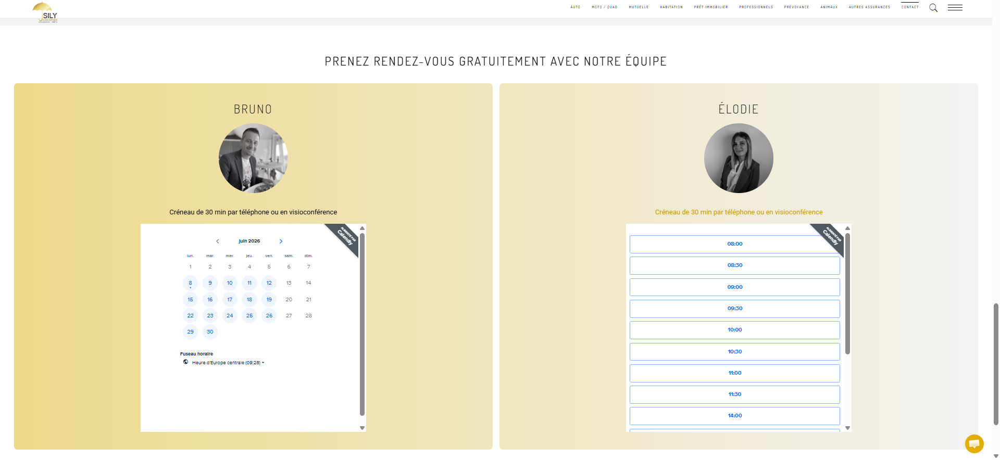

Présentation et évaluation de savoir-faire techniques
Cette partie permet de présenter et évaluer les savoir-faire techniques ...
S'auto-former et utiliser sur un nouvel outil : Calendly

Savoir-faire élémentaire : S'auto-former sur de nouveaux langages et outils .

Trace 5 : Intégration des calendriers Calendly dans la page contact du site sily.frEn plus du sujet principal du stage, Bruno m'a demandé de mettre en place un outil de prise de rendez-vous en ligne pour Sily Courtier : Calendly. En effet, actuellemt l'équipe partage un calendrier sur lequel est renseigné les rendez-vous de tous, rendant le tout peu lisible. C'est pour cela que l'outil Celendly permet que les clients réservent directement leurs créneau en ligne sur les disponibilités de chacun.
Après m'être renseigné sur l'outil et l'avoir manipulé , je l'ai donc mis ne place pour l'équipe en leur créant des comptes et leur faisant différents tutos concis afin qu'ils puissent au mieux mettre en place leurs disponibilités, connecter leur boites mails partagées et rendre Calendly opérationnel. Lors de la prise de rendez-vous par un client, Calendly le renseigne directement dans l'agenda associé au compte et notifie la personne en question (pour modifier ou annuler en cas d'imprévu).
J'ai aussi présenté les fonctionnalités disponibles avec la version gratuite de Calendly afin de l'utiliser au mieux.
Calendly est ensuite intégré sur des site web via du code.